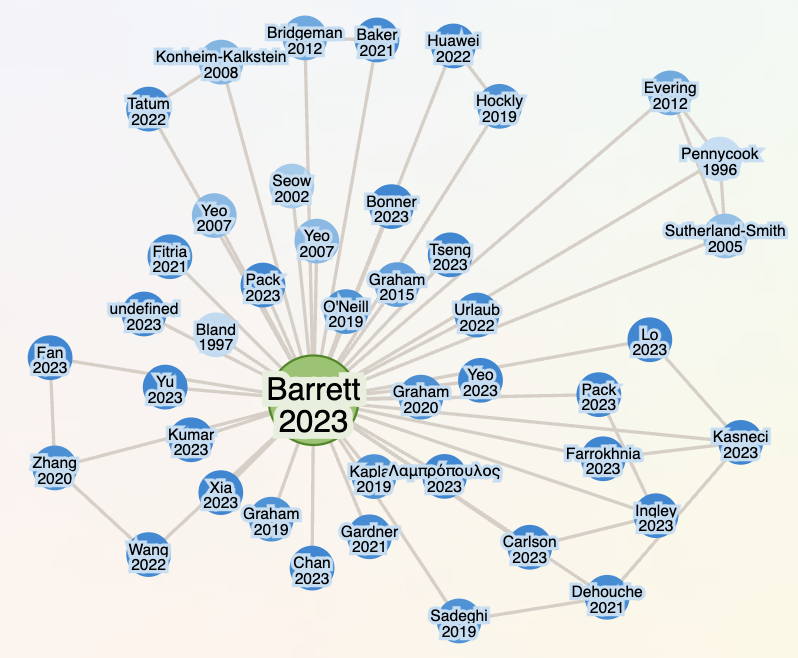
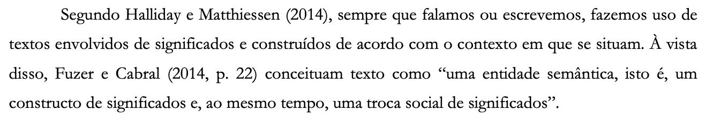
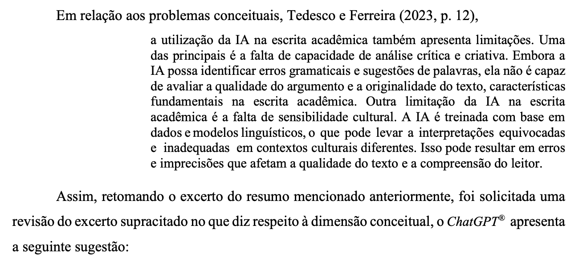
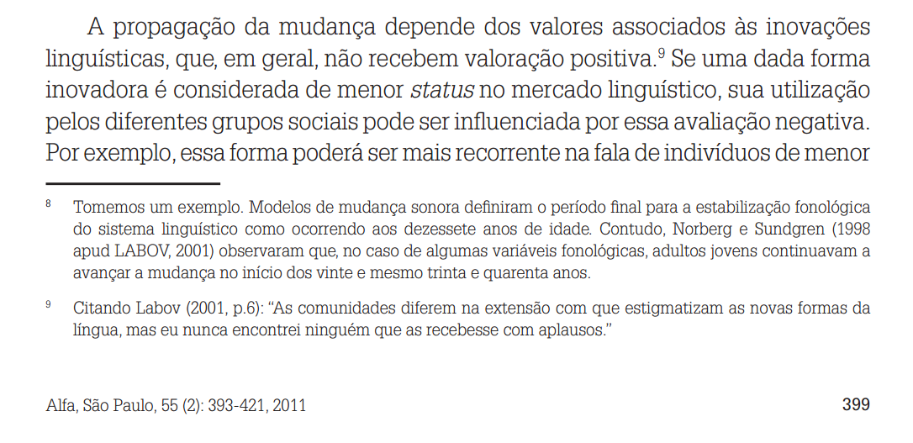
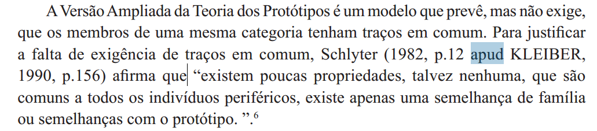
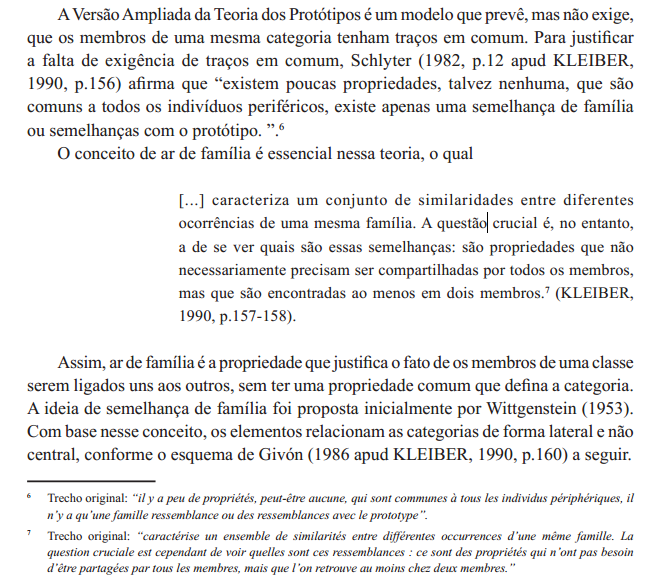

8 Como fazer citações?
Roteiro de aula elaborado com o apoio de linguagens de programação e ferramentas de inteligência artificial, submetido à revisão, validação e curadoria pedagógica do professor.
Leituras indicadas
Citações diretas e indiretas (p. 89-97), capítulo do livro Leitura e escrita acadêmicas, de Nádia Studzinski Estima de Castro e colaboradores. Disponível na Minha Biblioteca.
NBR 10520:2023 e NBR 6023:2018. Disponíveis no SIGAA.
8.1 Objetivo de aprendizagem
Ao final deste encontro, e com base na leitura indicada, espera-se que você seja capaz de:
- identificar e empregar diferentes formas de citação, atribuindo adequadamente as ideias às respectivas fontes e elaborando suas referências.
8.2 Contextualização
8.3 Leitura em foco
A escrita acadêmica requer argumentos fundamentados cientificamente, não admitindo senso comum ou simples opinião. O argumento científico autoral depende de pesquisa em fontes confiáveis e relevantes, e de paráfrase honesta. (Castro et al., 2019, p. 7 - destaques meus).
Uma paráfrase consiste em apresentar com outras palavras uma ideia proveniente de outro texto, preservando seu sentido. Na escrita acadêmica, entretanto, reformular uma ideia não é suficiente: é preciso também indicar sua origem.
Essa atribuição é realizada por meio da citação, isto é, da indicação, no próprio texto, de que determinada ideia, informação ou trecho provém de uma fonte. Quando apresentamos com nossas próprias palavras a ideia de outro autor e indicamos sua fonte, fazemos uma citação indireta.
Paráfrase → reformula a ideia de uma fonte com outras palavras.
Citação → atribui uma ideia, informação ou trecho à fonte de onde provém.
Citação indireta → apresenta a ideia da fonte por meio de uma paráfrase e indica sua origem.
Citação direta → reproduz as palavras da fonte e indica sua origem.
A escrita acadêmica exige, portanto, rigor na apresentação das fontes de informação. As normas de citação e referência — como as da ABNT, APA ou Vancouver — estabelecem formas padronizadas de identificar essas fontes, contribuindo para a transparência e a credibilidade do trabalho científico.
Onde estão disponíveis as normas?
SIGAA > Biblioteca > Documentos ABNT
Um texto que segue essas normas permite ao leitor localizar com precisão as obras consultadas, verificar os dados utilizados e reconhecer os autores envolvidos na construção do conhecimento. A normalização, portanto, não é apenas uma exigência formal, mas um componente essencial da ética e da qualidade na produção acadêmica.
Observe o modelo de TCC aprovado pela Ufersa
width: 100%; height: 900px; margin: 0 auto; overflow: hidden; border: 1px solid #ddd; border-radius: 8px; “}
Parte fundamental dessa normalização diz respeito ao uso de citações (ou discurso reportado). Uma citação diz respeito à forma como o autor do texto acadêmico incorpora, comenta ou mobiliza a voz de outros autores em sua escrita.
Marcar adequadamente as citações é essencial para:
- Evitar o plágio, que é um infração ética e institucional (e que pode ser tipificado como crime se se enquadrar como violação de direitos autorais)
- Situar a pesquisa na rede de conhecimento em constante atualização;
- Dialogar com o que já foi produzido sobre o tema;
- Demonstrar respeito ao leitor, informando claramente o que é seu e o que é do outro;

background: #FFF1F2; color: #3F0D12; padding: 1.25rem 1.4rem; border: 2px solid #DC2626; border-left: 10px solid #B91C1C; border-radius: 10px; box-shadow: 0 4px 14px rgba(127,29,29,0.12); margin: 1.4rem 0; “} ::: {style=” display: flex; align-items: center; gap: 0.8rem; margin-bottom: 0.9rem; color: #991B1B; font-size: 1.35rem; font-weight: 800; “} ⚠️ ATENÇÃO: PLÁGIO
Plágio é o uso de ideias, trechos, dados ou produções intelectuais de outra pessoa sem a devida atribuição de autoria.
Ele pode ocorrer tanto na cópia literal sem indicação da fonte quanto na reformulação de ideias alheias sem referência.
background: #FECACA; color: #450A0A; padding: 0.85rem 1rem; border-radius: 7px; margin-top: 1rem; border-left: 5px solid #DC2626; font-weight: 650; “} Trocar algumas palavras não transforma uma ideia alheia em ideia própria: mesmo reformulada, sua origem deve ser indicada.
:::::::
8.4 Leitura em foco
Como incorporar citações ao seu texto?
Uma citação não precisa aparecer isolada no texto. Podemos integrá-la ao nosso próprio texto, indicando quem é responsável pela ideia apresentada.
Compare:
A competência argumentativa se desenvolve pelo contato sistemático com práticas de leitura e escrita.
com:
Silva (2024, p. 25) afirma que a “competência argumentativa se desenvolve pelo contato sistemático com práticas de leitura e escrita”.
No primeiro exemplo, a afirmação é apresentada sem indicação de autoria. No segundo, afirma introduz a voz de Silva e deixa explícito que a ideia é atribuída a esse autor.
Palavras como afirmar, explicar, argumentar e defender são chamadas de verbos dicendi.
Verbos dicendi são verbos utilizados para introduzir a voz de outra pessoa no texto.
Na escrita acadêmica, eles permitem incorporar uma citação ao próprio texto e indicar ao leitor quem é responsável pela ideia apresentada.
Exemplos:
afirmar · explicar · argumentar · defender · observar · destacar · indicar · sugerir · questionar · demonstrar
8.4.1 Como usar verbos dicendi?
Uma estrutura muito frequente na escrita acadêmica é:
Sobrenome do autor (+ ano) + verbo dicendi + conteúdo atribuído à fonte
Silva (2024) afirma que…
Pereira e Costa (2023) destacam que…
Almeida (2022) defende a necessidade de…
Santos (2025) questiona a ideia de que…
Sobrenome do autor (+ ano, número de página) + verbo dicendi + conteúdo atribuído à fonte.
O número da página é obrigatório se houver transcrição literal do texto-fonte.
Silva (2024, p. 25) afirma que…
Pereira e Costa (2023, p. 25) destacam que…
Almeida (2022, p. 25) defende a necessidade de…
Santos (2025, p. 25) questiona a ideia de que…
O verbo dicendi, entretanto, não serve apenas para introduzir a citação. Sua escolha também indica como a contribuição da fonte está sendo apresentada.
Compare:
Silva (2024) afirma que…
Silva (2024) sugere que…
Silva (2024) defende que…
Silva (2024) questiona a ideia de que…
Os verbos não são equivalentes!
Ao incorporar uma citação ao texto, pergunte-se:
Quem é responsável por esta ideia? O que esse autor faz ao apresentá-la: afirma, explica, sugere, defende, questiona, demonstra…?
8.5 Aprendizagem prática
Identificação
Verbos dicendi
Identifique, no texto abaixo — criado para os fins desta aula —, os verbos ou expressões utilizados para introduzir as vozes das fontes.
Em seguida, responda:
Que partes do texto são atribuídas às fontes citadas e que partes resultam da organização e articulação feitas pelo autor do texto?
Ao discutir os desafios da escrita acadêmica no ensino superior, Araújo e Farias (2025) destacam que o maior obstáculo enfrentado pelos estudantes é a dificuldade de articular argumentos com base em fontes confiáveis, o que compromete a credibilidade de seus textos. De modo semelhante, Czolpinski, Brito e Raupp (2024) observam que muitos alunos ainda recorrem ao senso comum ou a fontes não verificadas, em vez de dialogar com autores reconhecidos da área. É nesse sentido que Azevedo e Machado (2024) defendem a necessidade de formar leitores críticos, capazes de interpretar e mobilizar o conhecimento científico de maneira ética e responsável. Conforme afirmam Jaime e Leonel (2024, p. 12), “a competência argumentativa não se desenvolve apenas pela leitura, mas pela prática constante de escrever em diálogo com outras vozes”. Além disso, Silva, Rosa e França (2025) chamam a atenção para o papel dos professores como mediadores desse processo, propondo atividades que estimulem o uso consciente de citações e a construção de um posicionamento autoral no texto acadêmico.
…
Os verbos e expressões que introduzem as vozes das fontes são:
destacam Araújo e Farias (2025)
observam Czolpinski, Brito e Raupp (2024)
defendem Azevedo e Machado (2024)
afirmam Jaime e Leonel (2024, p. 12)
chamam a atenção para Silva, Rosa e França (2025)
A maior parte das informações apresentadas é atribuída explicitamente às fontes citadas. O autor do texto, entretanto, também seleciona, organiza e estabelece relações entre essas diferentes vozes.
Isso pode ser percebido em expressões como:
“De modo semelhante” — estabelece aproximação entre duas contribuições;
“É nesse sentido que” — relaciona uma contribuição ao raciocínio desenvolvido anteriormente;
“Além disso” — acrescenta outra contribuição ao desenvolvimento do texto.
A presença de várias citações, portanto, não elimina a atuação do autor do texto. Ele é responsável pela seleção das fontes e pela articulação entre as diferentes vozes.
Tipos de citações
A prática da citação envolve tanto a citação direta (ou discurso direto), quando se reproduz fielmente as palavras de outrem, quanto a citação indireta (ou *discurso indireto), quando se parafraseiam as palavras de outrem.
Citação indireta
- A ideia do autor é parafraseada, com menção à fonte sem aspas;
- a indicação de página não é obrigatória, mas pode ser incluída.
Exemplos:

Citação direta curta
- Citação literal com até três linhas;
- deve ser integrada ao parágrafo, entre aspas duplas;
- a fonte da citação (autor, ano e página) aparece entre parênteses;
- não deve conter itálico ou destaque gráfico.
Exemplos:


Citação direta longa
- Citação com mais de três linhas;
- deve ser destacada em parágrafo próprio, com recuo de 4 cm da margem esquerda;
- deve estar em fonte de tamanho menor que a do corpo do texto;
- não deve ter aspas;
- deve ter espaçamento simples entre as linhas;
- a referência (autor, ano, página) deve estar após o ponto final da citação.
Exemplos:


Citação de citação (apud)
- Usada apenas quando a obra original não foi consultada;
- deve mencionar as duas obras: a obra da ideia original e a obra consultada;
- a expressão apud (em itálico) é obrigatória, com os demais dados da fonte consultada.
Atenção: o uso de apud deve ser excepcional. Sempre que possível, consulte a fonte original.
Exemplos:




8.6 Leitura em foco
(…) uma referência é um “Conjunto padronizado de elementos descritivos, retirados de um documento, que permite sua identificação individual”, ou seja, são todas as informações sobre a obra que está sendo utilizada no trabalho. (Castro et al, 2019, p. 80 - aspas dos autores).
Segundo a ABNT, as referências bibliográficas devem ser dispostas em ordem alfabética.
Considere que, no Brasil, tipicamente se adota o sistema autor-data, conforme a NBR 10520/2023 recomenda, mas isso não é obrigatório. Consulte sempre as normas de formatação da instituição para a qual se vai se submeter o trabalho acadêmico.
Exemplo:

8.7 Aprendizagem prática
Identificação
Citações
Identifique no texto abaixo, publicado no periódico RenBio (Revista de Ensino de Biologia), todas as ocorrências de citações. Separe-as por tipo de citação: citação direta, citação indireta ou citação da citação. Copie e cole num documento à parte (bloco de notas). Siga o modelo:
Modelo:
Citação indireta Página 15: Silva e Andrade (2024) afirmam que desenvolver a autonomia intelectual dos estudantes requer práticas pedagógicas que estimulem a pesquisa e o pensamento crítico em todos os níveis de ensino.
Citação direta Página 12: Percebe-se que “os estudantes têm a oportunidade de investigar problemas reais de suas comunidades, o que torna o aprendizado mais significativo e socialmente relevante” (Pereira; Costa; Nunes, 2025).
Citação da citação Página 43: Segundo Freire (1996, apud Souza; Almeida, 2025, p. 613), “ensinar não é transferir conhecimento, mas criar as possibilidades para a sua própria produção ou a sua construção”.
…
Citação indireta
Página 608: Estabelece-se, com isso, uma corresponsabilidade entre as instituições de ensino superior e ensino básico com a formação inicial de professores (Capes, 2018).
Página 608: As horas são divididas em três módulos de seis meses com carga horária de 138 horas cada módulo (Capes, 2023).
Página 608: Segundo Nascimento e Bezerra (2019), o ensino de ciências visa dar sentido e significado aos conhecimentos científicos e tecnológicos que fazem parte do cotidiano.
Páginas 608-609: Segundo esses autores, é através da curiosidade e da inquietação que os estudantes-clubistas são motivados a investigar, questionar e experimentar, o que leva a uma compreensão mais profunda dos conceitos científicos.
Página 609: O Clube de Ciências, segundo Milanesi e colaboradores (2019), é um espaço de encontros com trocas de vivências, experimentos e interações dinâmicas distintas das observadas em aulas convencionais, acarretando desenvolvimento do conhecimento científico e do pensamento crítico por meio de abordagens investigativas.
Página 609: Conforme delineado por Ramalho et al. (2011), os Clubes de Ciências representamespaços educativos nos quais estudantes, compartilhando interesses em ciência, reúnem-se forado horário escolar convencional.
Página 609: De acordo com Pires et al. (2007), os Clubes de Ciências não são meros espaços para aquisição de conhecimentos científicos e tecnológicos por parte dos alunos.
Página 609: No contexto da Base Nacional Comum Curricular (BNCC), os ateliês são espaços de aprendizado prático e interdisciplinar que atendem às competências e habilidades da área relacionadas à BNCC, promovendo a exploração, observação e a experimentação, valorizandoa aprendizagem por meio de práticas investigativas, que são ferramentas importantes para oestudo das ciências naturais (Brasil, 2018).
Página 613: Além disso, a colaboração entre o professor, os estudantes e os demais envolvidos pode trazer contribuições significativas para a alfabetização científica dos jovens, fortalecendo aspectos como a assimilação de conceitos, a elaboração de modelos, o desenvolvimento de habilidades cognitivas e o raciocínio científico (Buch; Schroeder, 2013).
Página 617: Estimular a curiosidade, a investigação e o pensamento crítico entre os estudantes é crucial para formar cidadãos mais preparados para os desafios do mundo atual, pois, segundo Buch e Schroeder (2013), a construção do conhecimento científico é um processo contínuo queenvolve a participação ativa do indivíduo.
Citação direta
Página 608: Dias e colaboradores (2013, p. 160) afirmam que: “o ensino de ciências deve estimular nos estudantes a capacidade deobservação, despertando a curiosidade, a inquietação, a busca por novas respostas”.
Página 609: Nesse contexto, Duarte e Duarte (2013, p. 37) declaram que:
O ensino de ciências naturais não pode se limitar à promoção de mudanças conceituais ou ao aprendizado do conhecimento científico. É necessário também buscar mudanças metodológicas e de atitude nos alunos, bem como ressignificar o ensino para construir um processo de aprendizagem, no qualprofessores e alunos possam interagir de forma crítica e reflexiva ao ensinarem e aprenderem (Duarte; Duarte, 2013, p. 37)
Citação da citação
Não há ocorrências.
Para a próxima aula:
- Leia o texto Citações diretas e indiretas (p. 89-97), capítulo do livro Leitura e escrita acadêmicas, de Nádia Studzinski Estima de Castro e colaboradores. Disponível na Minha Biblioteca.